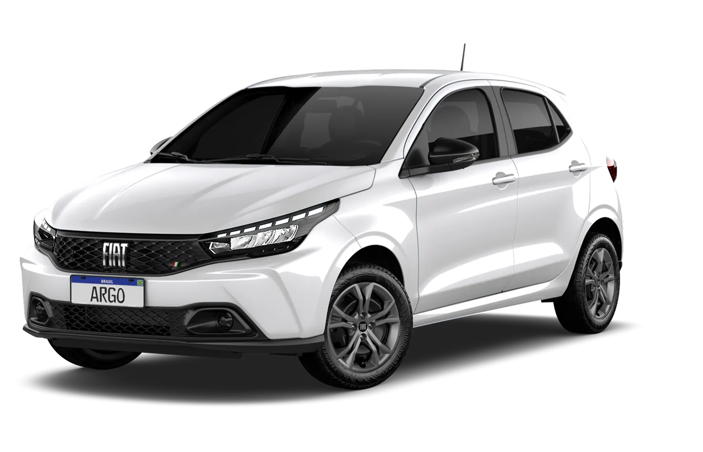

Preço: R$ 78.223
Descrição: O Fiat Argo 1.3 Firefly CVT é um carro que combina motor eficiente com câmbio automático do tipo CVT, oferecendo conforto, tecnologia e economia.
Especificações Técnicas:
- Motor: 1.3 Firefly Flex (aspirado)
- Potência: 109 cv (etanol) / 101 cv (gasolina) a 6.250 rpm
- Torque: 14,2 kgfm (etanol) / 13,7 kgfm (gasolina) a 4.000 rpm
- Transmissão: Manual 5 marchas ou Automática CVT (7 marchas simuladas)
- Dimensões:
- Comprimento: 3.998 mm
- Largura: 1.724 mm
- Altura: 1.503 mm
- Entre-eixos: 2.521 mm
- Porta-malas: 300 litros
- Ano/Modelo: 2025
- Quilometragem: 5.851 km
- Motor: 1.3 FIREFLY FLEX TREKKING CVT
- Câmbio: Automático
- Cor: Branco
- Itens de série:
- Entrada USB
- Rádio AM/FM
- Conexão Bluetooth
- Espelhamento de celular
- Volante multifuncional
- Desembaçador traseiro
- Limpador e lavador do vidro traseiro
- Banco do motorista com ajuste de altura
- Luz no porta-malas